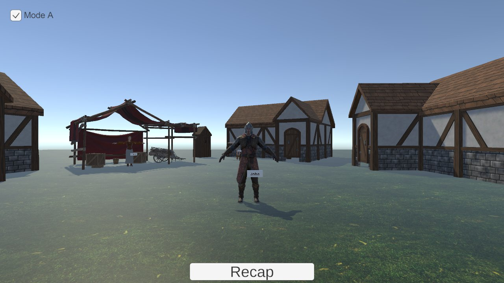

Research prototype
AI Recap System
A Unity prototype that logs what the player does to the people in a small town, then turns that log into a written recap of the session, either with Google's Gemini API or from summaries I wrote by hand, so the two can be compared blind.

What I built
- Logged every conversation and kill as a structured event with who, what and when, and serialised the session to JSON.
- Sent that JSON to the Gemini API from Unity with UnityWebRequest and a prompt that asks for a short second-person recap.
- Wrote around 80 recaps by hand, one for each possible order of events, and looked the right one up from a key built out of the same event log.
- Made both versions look identical to the player: the hand-written recap waits a second before appearing and both use the same typewriter reveal.
My role
I built the whole prototype: the town scene and characters you can talk to or kill, the event log, the Gemini integration and the hand-written alternative. The aim was a fair comparison, so the player cannot tell from how a recap appears which of the two wrote it.
What I learned
Calling a web API from Unity, designing data so that code and a language model can both read it, and setting up a comparison so that the thing being tested is the only difference.
How it works
An event log both sides can read
Every character has a name and a role. Talking to one or killing one adds an event with the name, role, action, line of dialogue and timestamp. The same list feeds both versions: it is serialised to JSON for Gemini, and reduced to a key such as Guard_Talk-Merchant_Kill to look up the hand-written recap.
Keeping the comparison fair
Gemini takes a moment to answer and a lookup is instant, which would give the game away. The hand-written recap therefore waits a second before it appears, and both are revealed one character at a time by the same routine. A single toggle switches between the two, so the builds given to testers are otherwise identical.
Limiting the possibilities
A character you have spoken to can no longer be killed, and a dead one cannot speak. That keeps the number of possible sessions small enough to write a recap for every one of them by hand, which is what makes a like-for-like comparison possible at all.
- Talk to or kill a character
- Event added to the log
- Recap requested
- Gemini writes it, or the key finds a hand-written one
- Same typewriter reveal
Code
Short excerpts from the project. Every line shown is mine.
private void HumanSummary()
{
string key = GetKey();
string summary = humanClient.GetSummary(key);
StartCoroutine(Wait(summary));
}
//using a wait to mask the difference between the ai and human one so testers arent biased
private IEnumerator Wait(string summary)
{
yield return new WaitForSeconds(1);
StartCoroutine(SendToUI(summary));
}
private string GetKey()
{
// 1. Handle the empty case first
if (events == null || events.Count == 0 || events[0] == null)
{
return "NONE";
}
List<string> keyParts = new List<string>();
foreach (var evt in events)
{
if (evt == null) continue;
// Ensure the role starts with a Capital letter (Guard, Merchant, Peasant)
string role = char.ToUpper(evt.role[0]) + evt.role.Substring(1);
// Match the CSV casing exactly: _Talk or _Kill
string action = "";
if (evt.action == "talked") action = "_Talk";
else if (evt.action == "killed") action = "_Kill";
keyParts.Add(role + action);
}
// This joins them with '-' only if there are multiple parts
// e.g., "Guard_Talk-Merchant_Kill"
return string.Join("-", keyParts);
}The one-second wait exists only so testers cannot tell the two versions apart by speed.
Like what you see?
I'm looking for my first games industry role as a gameplay or AI programmer. Studios of any size welcome.